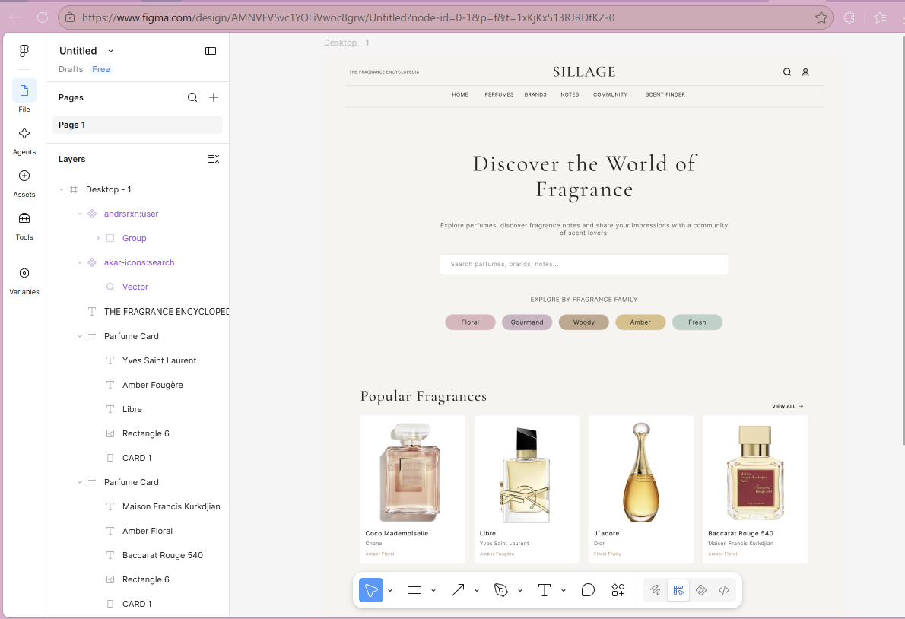
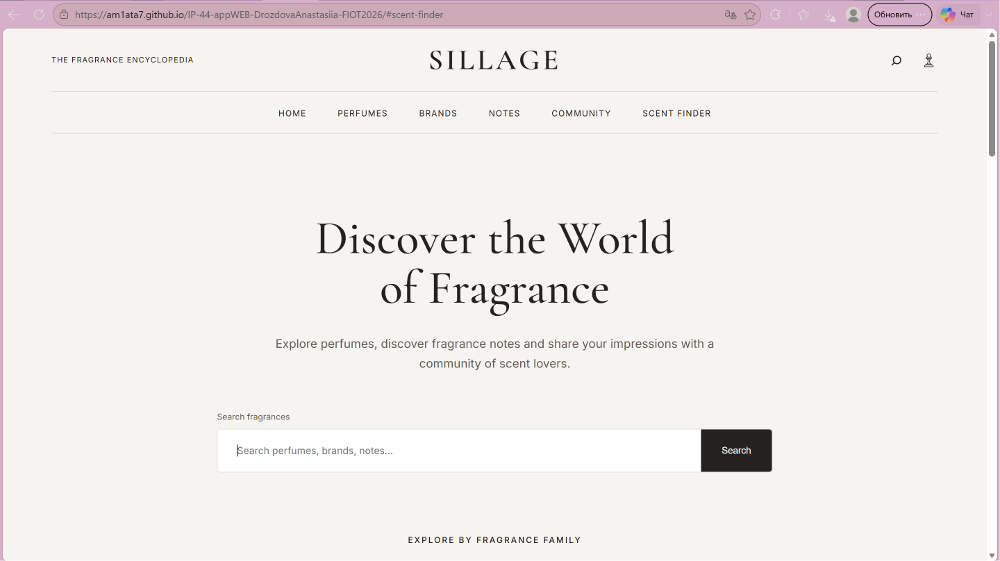
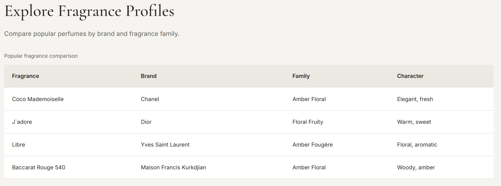
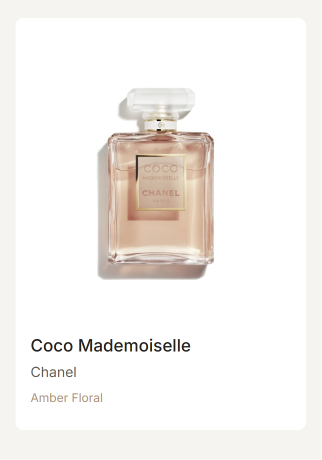
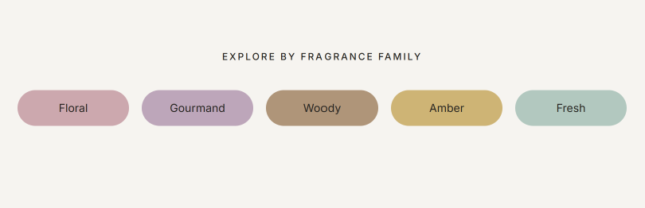
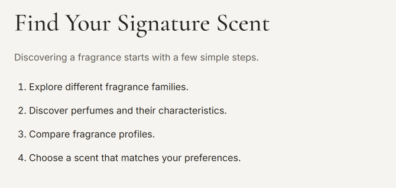
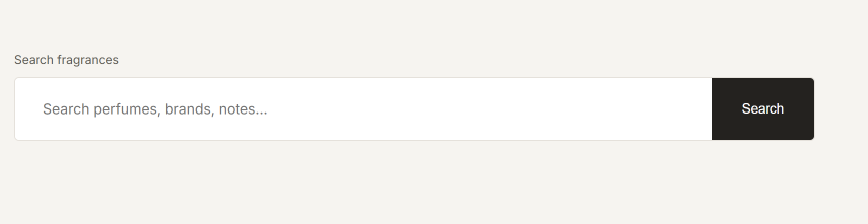

Тема, мета та місце розташування
Лабораторна робота №1
Тема: Теги та атрибути HTML-документа. Структурна розмітка. Git. GitHub. Робота з репозиторіями. Опис логіки власного WEB-застосунку.
Мета: Набути практичних навичок роботи з GitHub, репозиторіями та HTML-документами. Навчитися використовувати заголовки, таблиці, зображення, списки, посилання та форми. Створити власний WEB-застосунок і шаблон звітного HTML-документа.
Місце розташування проєктів
- WEB-застосунок Sillage: GitHub-репозиторій | WEB-сторінка
- Звітний HTML-документ: GitHub-репозиторій | WEB-сторінка
- Самостійні роботи: GitHub-репозиторій | WEB-сторінка
Опис предметного середовища
Назва WEB-застосунку: Sillage
Sillage — це інформаційний WEB-застосунок, присвячений парфумерії. Його основне призначення — допомагати користувачам знайомитися зі світом ароматів, переглядати інформацію про парфуми, досліджувати ароматичні сімейства та знаходити композиції відповідно до власних уподобань.
Ідея проєкту полягає у створенні зручного онлайн-простору, який поєднує каталог парфумерії, інформацію про бренди, парфумерні ноти та можливість пошуку ароматів за визначеними характеристиками.
Цільовою аудиторією застосунку є люди, які цікавляться парфумерією, бажають дізнаватися більше про ароматичні композиції або шукають нові парфуми.
Основні розділи WEB-застосунку
- Home — головна сторінка.
- Perfumes — каталог ароматів.
- Brands — інформація про бренди.
- Notes — парфумерні ноти.
- Community — спільнота користувачів.
- Scent Finder — пошук ароматів.
На поточному етапі реалізовано статичний прототип головної сторінки засобами HTML та CSS. Розширений пошук, каталог і функції спільноти передбачені концепцією проєкту для подальшої реалізації.
Опис бізнес-логіки WEB-застосунку
Бізнес-логіка Sillage ґрунтується на взаємодії користувача з інформацією про парфумерні продукти.
Сценарій взаємодії користувача
- Користувач відкриває головну сторінку Sillage.
- Ознайомлюється з основними категоріями ароматів.
- Переглядає добірку популярних парфумерних композицій.
- Порівнює характеристики ароматів за допомогою інформаційної таблиці.
- Ознайомлюється з рекомендованою послідовністю вибору парфумів.
- За потреби переходить на сторінку з описом проєкту.
У майбутньому передбачається можливість пошуку за назвою, брендом, нотами та ароматичними сімействами, а також перегляду детальних характеристик окремих ароматів.
Функціональні та нефункціональні вимоги
Функціональні вимоги
- Відображення головної сторінки з інформацією про проєкт.
- Представлення популярних ароматів у вигляді карток.
- Відображення категорій парфумерних композицій.
- Представлення порівняльної таблиці ароматів.
- Відображення форми пошуку та навігаційних елементів.
- Перехід на окрему HTML-сторінку з описом предметного середовища.
Нефункціональні вимоги
- Зрозумілий і зручний інтерфейс користувача.
- Адаптивність до різних розмірів екрана.
- Логічна структура HTML-документа.
- Єдиний стиль оформлення сторінок.
- Коректне відображення зображень і текстових елементів.
- Можливість подальшого розширення функціональності.
Структура головної сторінки WEB-застосунку
Головна сторінка Sillage розроблена з використанням HTML5 та CSS3. Для організації вмісту застосовано семантичні HTML-елементи.
Макет WEB-застосунку у Figma

Реалізована головна сторінка

Основні структурні елементи
-
<header>— верхня частина сторінки. -
<nav>— навігаційне меню. -
<main>— основний вміст. -
<section>— тематичні розділи. -
<article>— самостійний інформаційний блок. -
<footer>— нижня частина сторінки.
Приклад базової структури HTML
<!DOCTYPE html>
<html lang="en">
<head>
<meta charset="UTF-8">
<title>Sillage</title>
<link rel="stylesheet" href="style.css">
</head>
<body>
<header>
<nav>...</nav>
</header>
<main>
<section>...</section>
</main>
<footer>...</footer>
</body>
</html>Повний вихідний код WEB-застосунку доступний у GitHub-репозиторії Sillage.
HTML-код таблиці
На головній сторінці Sillage використовується таблиця для порівняння парфумерних композицій.
Приклад HTML-коду таблиці
<table>
<thead>
<tr>
<th>Perfume</th>
<th>Brand</th>
<th>Fragrance Family</th>
</tr>
</thead>
<tbody>
<tr>
<td>Coco Mademoiselle</td>
<td>Chanel</td>
<td>Amber Floral</td>
</tr>
<tr>
<td>J'adore</td>
<td>Dior</td>
<td>Floral Fruity</td>
</tr>
<tr>
<td>Libre</td>
<td>Yves Saint Laurent</td>
<td>Floral</td>
</tr>
<tr>
<td>Baccarat Rouge 540</td>
<td>Maison Francis Kurkdjian</td>
<td>Amber Woody</td>
</tr>
</tbody>
</table>Результат виконання
Скріншот таблиці з головної сторінки WEB-застосунку:

Теоретичні відомості
Тег <table>
використовується для створення таблиці.
<tr> визначає рядок,
<th> — заголовок стовпця,
а <td> — комірку.
Елементи <thead>
та <tbody>
призначені для логічного розділення
заголовка та основної частини таблиці.
HTML-код зображення
Для представлення парфумерних продуктів на сайті використовуються зображення флаконів ароматів.
Приклад HTML-коду
<img
src="images/chanel-coco-mademoiselle.jpg"
alt="Chanel Coco Mademoiselle"
>Результат виконання

Теоретичні відомості
HTML-тег <img>
призначений для додавання зображень
на WEB-сторінку.
Атрибут src визначає
шлях до файлу зображення,
alt містить альтернативний
текстовий опис, а атрибути
width і
height можуть задавати
його розміри.
HTML-код списків
У WEB-застосунку Sillage використано маркований та нумерований списки.
Маркований список
Маркований список застосовується для відображення ароматичних сімейств.
<ul>
<li>Floral</li>
<li>Gourmand</li>
<li>Woody</li>
<li>Amber</li>
<li>Fresh</li>
</ul>
Нумерований список
Нумерований список використовується для опису послідовності вибору аромату.
<ol>
<li>Explore fragrance families</li>
<li>Discover perfume notes</li>
<li>Compare fragrances</li>
<li>Find your signature scent</li>
</ol>
Теоретичні відомості
<ul> створює
маркований список, у якому порядок
елементів не є принциповим.
<ol> створює
нумерований список, у якому порядок
елементів має значення.
Елемент <li>
використовується для позначення
окремого пункту списку.
HTML-код форми
На головній сторінці Sillage передбачено форму пошуку ароматів. На поточному етапі вона є елементом інтерфейсу без підключеної логіки обробки запитів.
Приклад HTML-коду
<form>
<input
type="search"
name="query"
placeholder="Search perfumes, brands, notes..."
>
<button type="submit">
Search
</button>
</form>Результат виконання

Теоретичні відомості
Елемент <form>
використовується для створення форми.
<input> забезпечує
введення даних, а
<button>
створює кнопку для взаємодії
з формою.
Теоретичні відомості
HTML
HTML (HyperText Markup Language) — мова гіпертекстової розмітки, яка використовується для визначення структури та вмісту WEB-сторінок.
HTML-теги та атрибути
HTML-теги визначають елементи документа. Атрибути надають додаткову інформацію про елементи, наприклад шлях до файлу, адресу посилання або тип поля.
Семантична розмітка
Семантичні теги відображають призначення окремих частин WEB-сторінки. Вони покращують читабельність коду та полегшують його подальшу підтримку.
Git
Git — розподілена система контролю версій, яка дозволяє відстежувати зміни у файлах проєкту та зберігати історію його розробки.
GitHub
GitHub — платформа для розміщення Git-репозиторіїв і спільної роботи над програмними проєктами.
GitHub Pages
GitHub Pages — сервіс для публікації статичних WEB-сайтів безпосередньо з GitHub-репозиторіїв.
Figma
Figma — інструмент проєктування користувацьких інтерфейсів, який дозволяє створювати макети WEB-сторінок до початку їх реалізації.
CSS
CSS (Cascading Style Sheets) — мова стилів, яка використовується для оформлення HTML-документів: кольорів, шрифтів, відступів, розташування та розмірів елементів.
Контрольні питання
1. Для чого використовується HTML?
HTML використовується для створення структури та вмісту WEB-сторінок.
2. Що таке HTML-тег?
HTML-тег — це елемент розмітки, який визначає структуру або призначення частини документа.
3. Що таке атрибут HTML?
Атрибут задає додаткові характеристики HTML-елемента.
4. Для чого потрібні списки?
Списки використовуються для структурованого подання послідовностей або наборів даних.
5. Яке призначення HTML-таблиць?
Таблиці використовуються для відображення табличних даних у рядках і стовпцях.
6. Для чого використовується Git?
Git дозволяє контролювати версії файлів та відстежувати історію змін у програмному проєкті.
7. Що таке GitHub Pages?
Це сервіс публікації статичних WEB-сайтів із GitHub-репозиторіїв.
Висновки
Під час виконання лабораторної роботи №1 було опрацьовано основи створення HTML-документів, використання тегів та атрибутів, а також принципи структурної розмітки WEB-сторінок.
Було розроблено макет головної сторінки WEB-застосунку Sillage у Figma та реалізовано її HTML- і CSS-структуру. На сторінці використано заголовки, посилання, зображення, таблицю, маркований і нумерований списки, а також форму пошуку.
Також було створено GitHub-репозиторії для WEB-застосунку, самостійних робіт та звітних HTML-документів. Отримано практичні навички роботи з Git, GitHub Desktop та системою контролю версій.
У результаті сформовано основу WEB-застосунку та структуру електронного звіту, які можна розширювати під час виконання наступних лабораторних робіт.
Лабораторна робота №2
Буде додано після виконання роботи.
Лабораторна робота №3
Буде додано після виконання роботи.
Лабораторна робота №4
Буде додано після виконання роботи.
Лабораторна робота №5
Буде додано після виконання роботи.
Лабораторна робота №6
Буде додано після виконання роботи.
Лабораторна робота №7
Буде додано після виконання роботи.
Лабораторна робота №8
Буде додано після виконання роботи.
Лабораторна робота №9
Буде додано після виконання роботи.